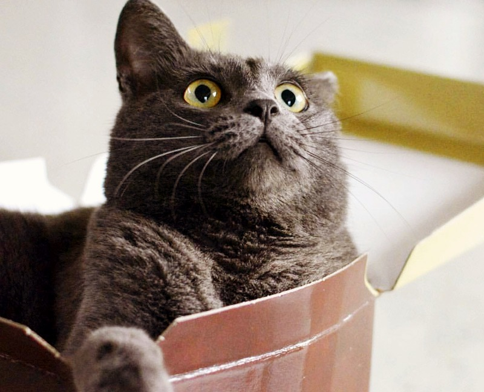
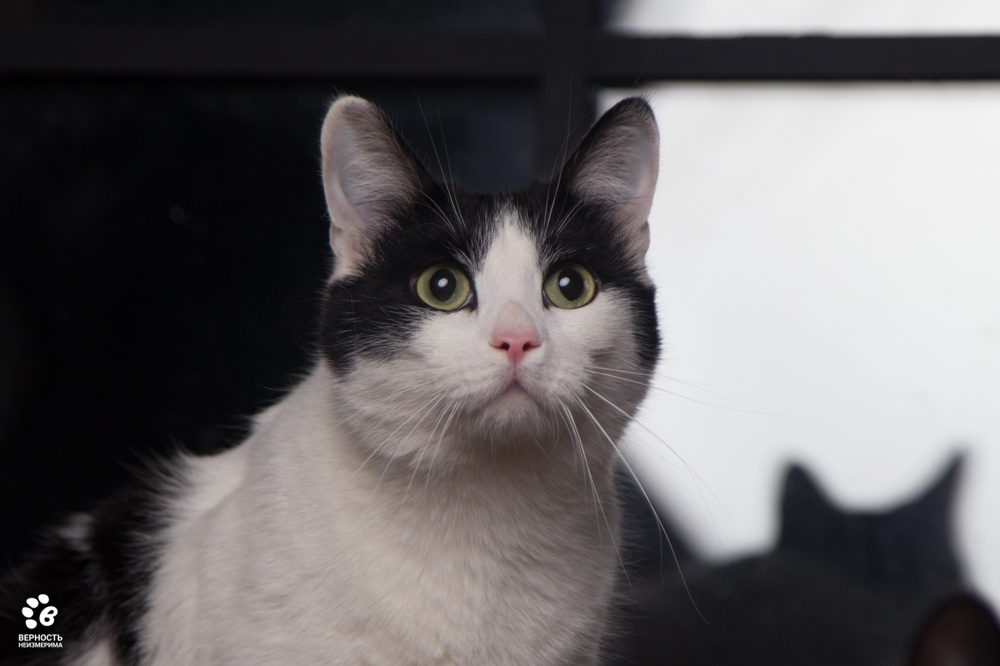
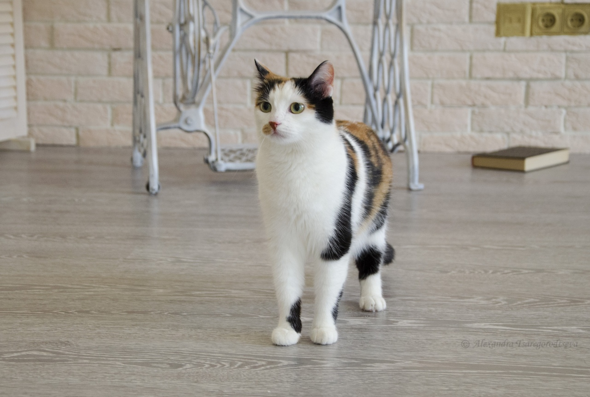
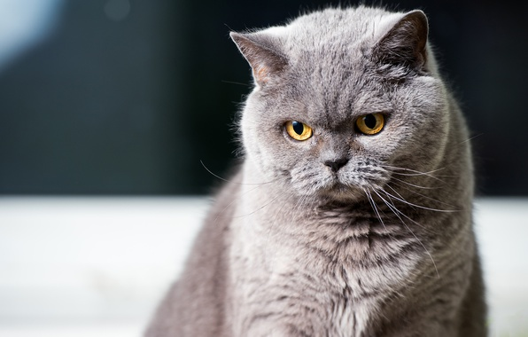
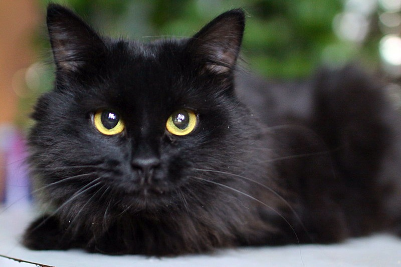
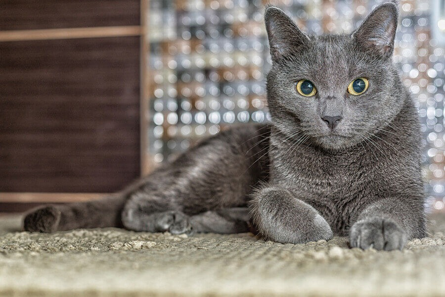
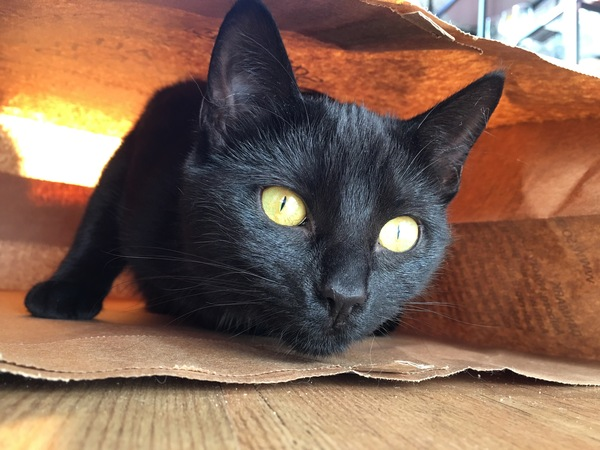
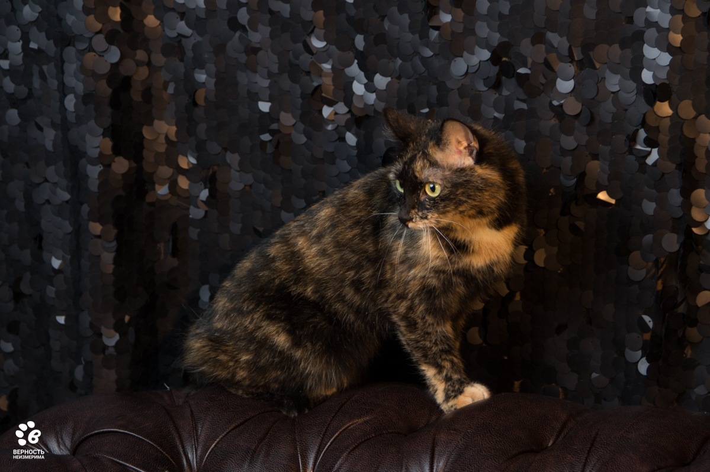
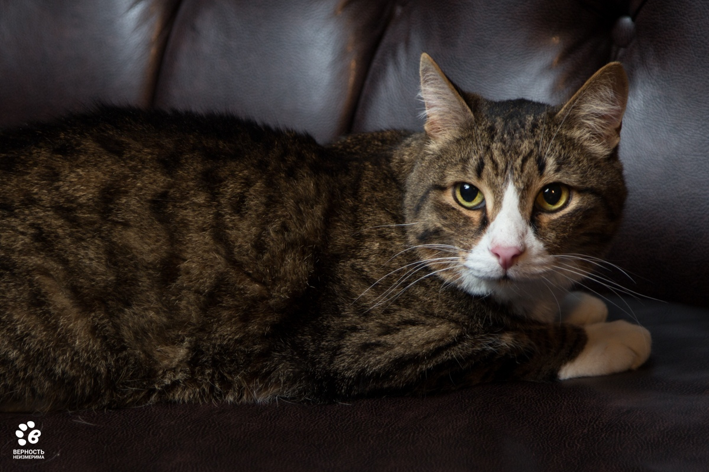
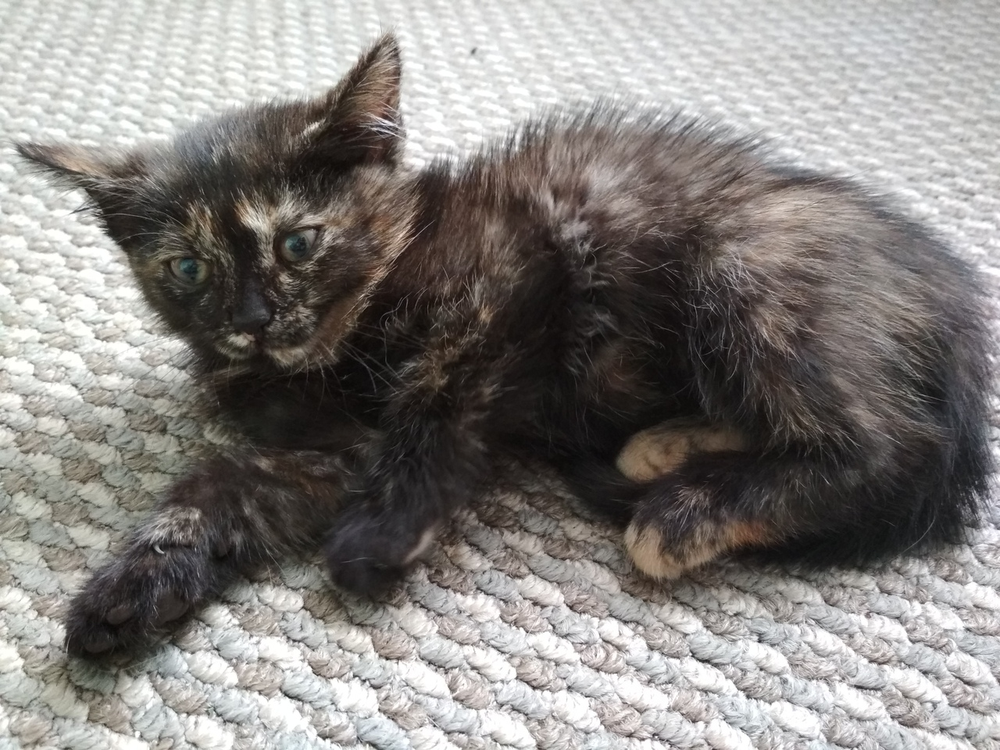

Возраст: 3,5 года
Порода: нет
Болезни: нет
Статус: ищет хозяина
Славная кошечка 3,5 года, но игривая, как котёнок.
Она не против отправиться в новый дом вторым питомцем.
Но боится агрессивных животных.
Матильда - кошечка-компаньонка для доброго, любящего животных человека.

Возраст: 5 лет
Порода: нет
Болезни: мочекаменная
Статус: ищет хозяина
Крупный котик весом около 6 кг уже.
Несмотря на свою упитанность, он любит побегать-поиграть, кого-нибудь погонять...
Любит полежать на спинке, раскинув в стороны свои лапки...
Мартину требуется периодическое наблюдение у ветеринара,
потому что он болел мочекаменной болезнью.

Возраст: 3 года
Порода: нет
Болезни: нет
Статус: ищет хозяина
Кошка-пушинка, весом всего 2 кг. Невероятная красотка!
Миниатюрная, счастливого трёхцветного окраса с ярко-зелеными глазками и
пикантным рыжим пятнышком на мордочке!

Возраст: 7 лет
Порода: нет
Болезни: нет
Статус: ищет хозяина
Возраст 7 лет. По прошествии месяца, кошечка все еще не доверяет,
иногда шипит или пытается бить лапой. Такое поведение
свойственно кошками при стрессе, смене места жительства.
Кошечка достаточно упитанная, у неё очень мягкая,
плюшевая шёрстка, как и у всех бриташек, и толстенькие щёчки.

Возраст: 5 лет
Порода: нет
Болезни: нет
Статус: ищет хозяина
Кошечка очень ласковая, но со своим характером, с "перчинкой".
Не любит других кошек, поэтому пристраивается единственной кошечкой в семью.
С людьми достаточно ласковая, любит погладиться,
но не терпит сильных тисканий и навязчивого внимания.

Возраст: 3,5 года
Порода: нет
Болезни: нет
Статус: ищет хозяина
Серая дымчатая шёрстка почти как у русской голубой,
но у Моти она чуть более плюшевая и мягонькая.
Кошечке 3,5 года, она стерилизована и отлично умеет пользоваться лоточком.
Не против отправиться в новый дом вторым питомцем. Но боится агрессивных животных.

Возраст: 4 года
Порода: нет
Болезни: нет
Статус: ищет хозяина
Шикарный холёный чёрный кот с хорошей блестящей шерстью!
Мальчишка очень ласковый, любит потереться об ноги и чтобы почесали шейку и щёчки.
Но Киллер достаточно серьёзный кот, так что не стоит махать перед его носом мячиками
и куколками! Поэтому он не подойдёт в компанию к детям,
хотя поиграть с верёвочкой или лазером он точно не откажется.

Возраст: 4 года
Порода: нет
Болезни: нет
Статус: ищет хозяина
Кнопочка не даст Вам скучать в одиночестве...
Она всегда рядом и всегда рада общению.
У Кнопочки очень мягкая шёрстка и любопытный длинный носик.
Кошечка небольшого размера и небольшого веса.
Возраст 4 года, стерилизована и вакцинирована.

Возраст: 5 лет
Порода: нет
Болезни: нет
Статус: ищет хозяина
Джордж Сэр Алистер Коннингтон Третий - взрослый кот, 5 лет.
Очень спокойный, серьезный и с неповторимой харизмой...
Не смотрите, что у Джорджа простой неприметный окрас.
Зато у него большое любящее своих хозяев сердце.
Это очень преданный кот, которому нужна своя семья и общение.

Возраст: 1,5 месяцев
Порода: нет
Болезни: нет
Статус: ищет хозяина
Котику около 1,5 месяцев.
Он уже самостоятельно кушает и пользуется лоточком.
Очень ласковый и подвижный малыш.